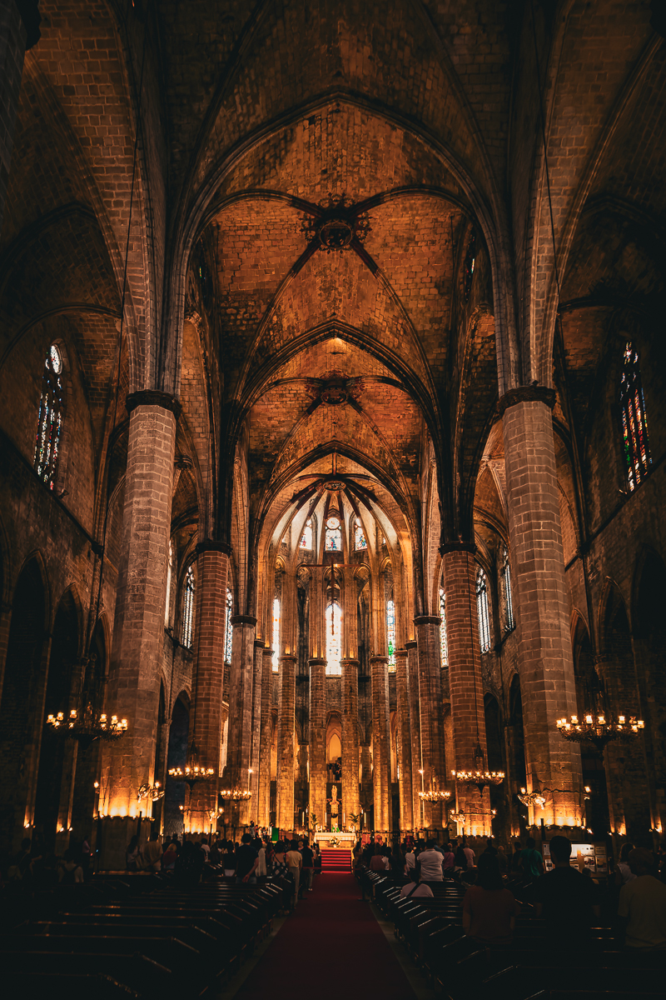
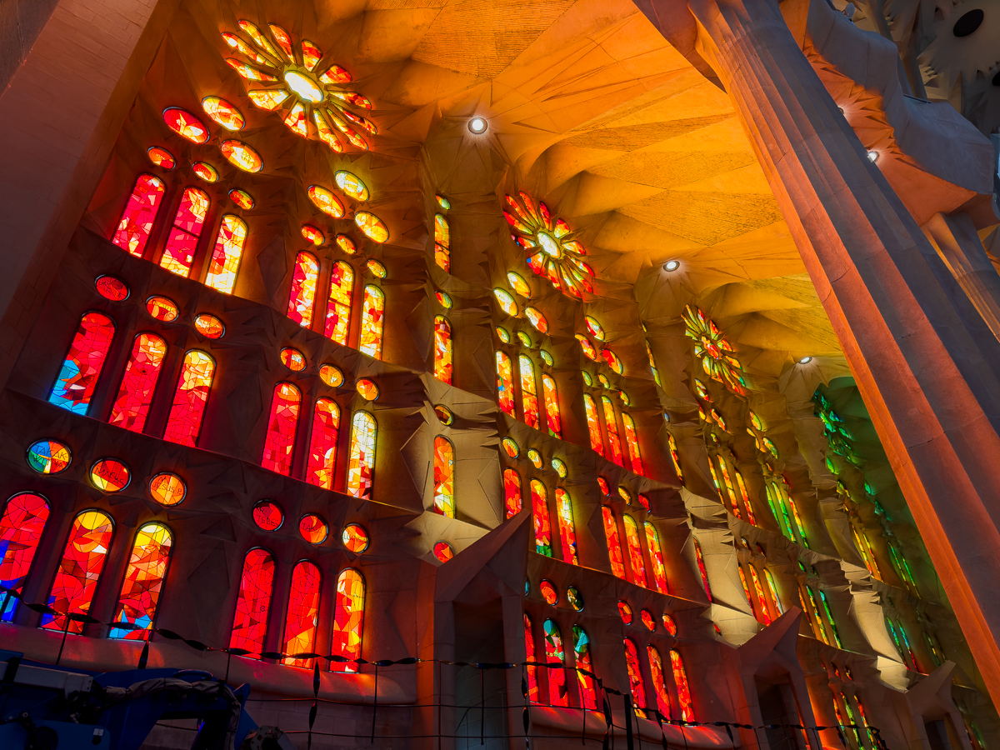
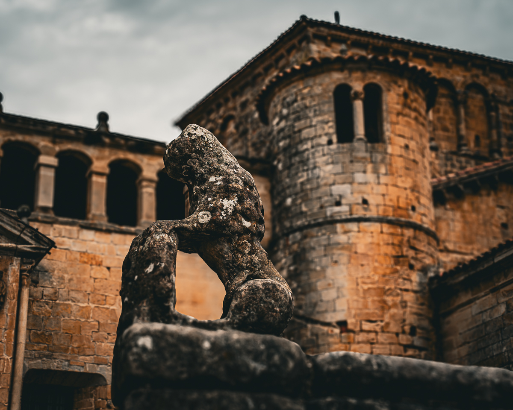
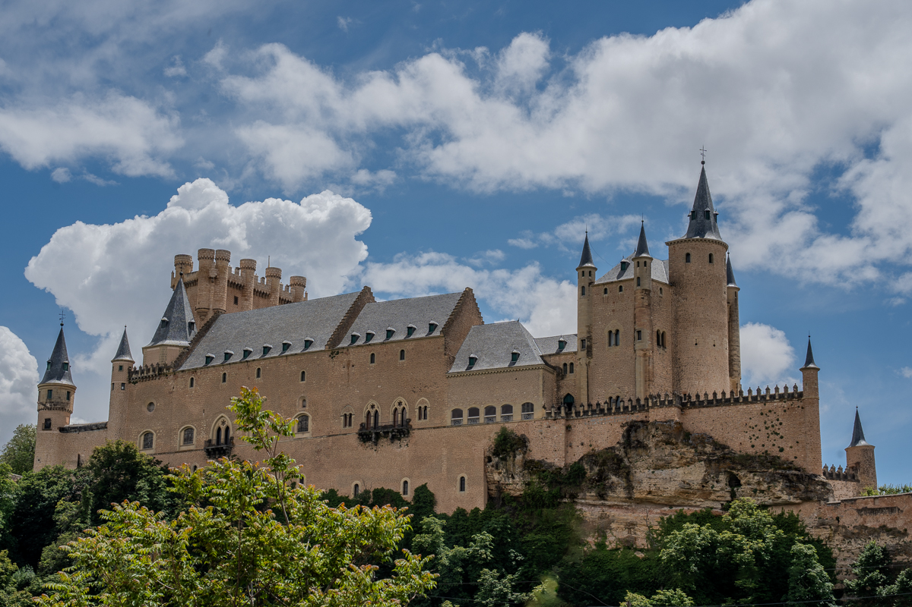
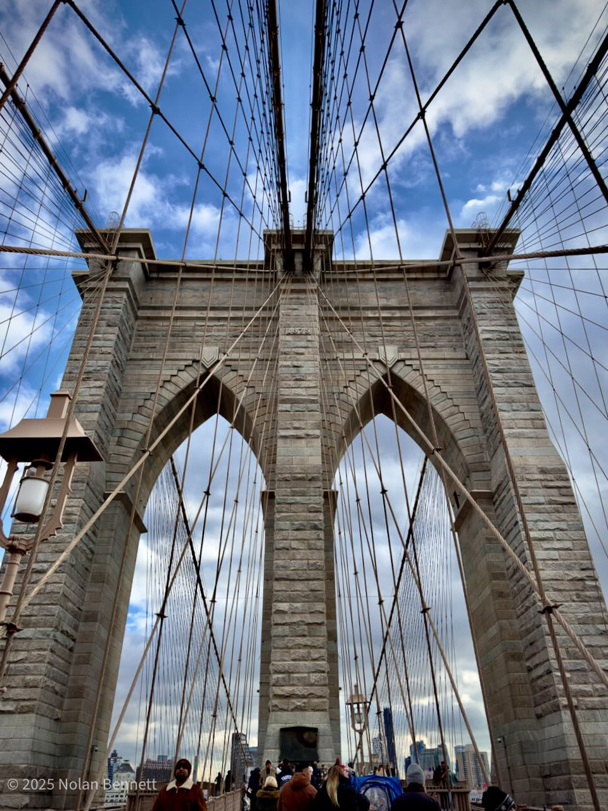
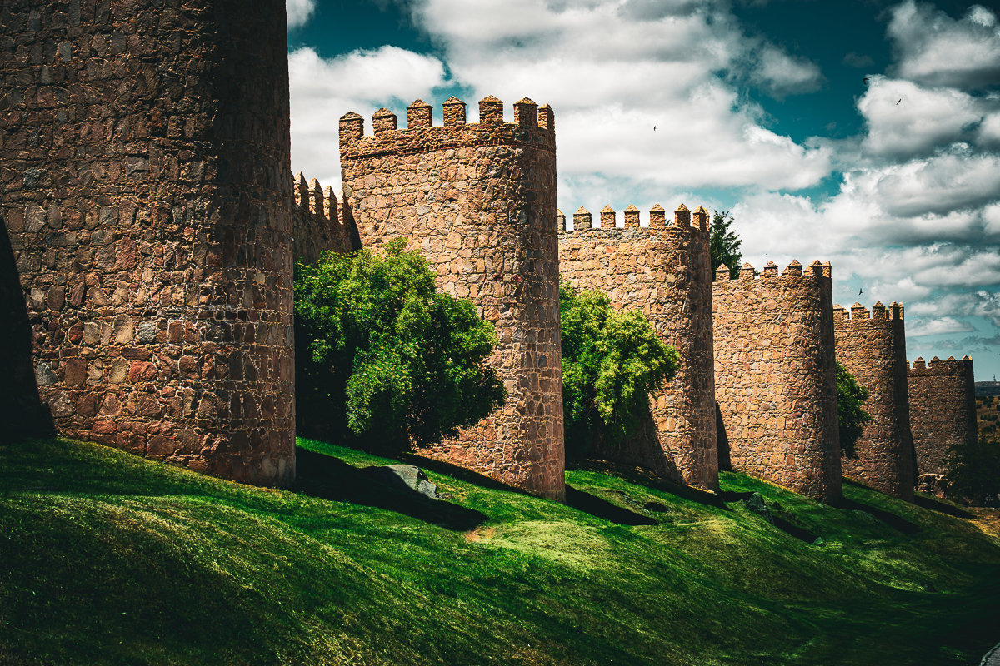
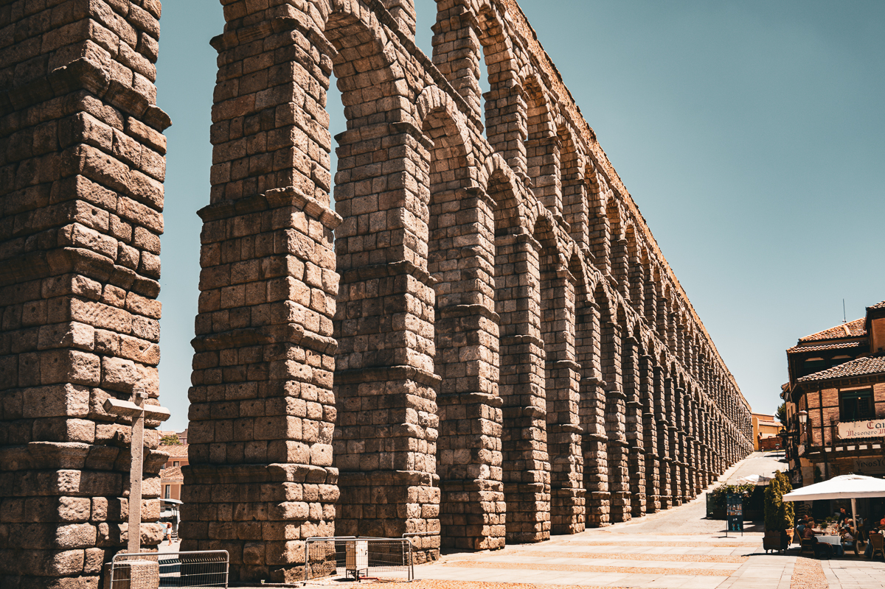
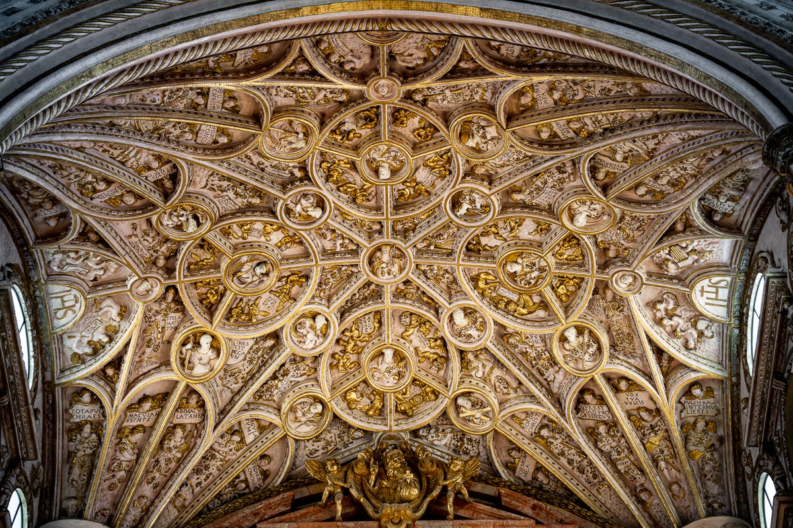

Architecture
Architecture photography showcases human creativity and engineering. Each photograph highlights the interactions between light, shadow, and geometric design that define our human environment.









| Setting | Typical Range | Purpose |
|---|---|---|
| Aperture | f/8 - f/11 | Ensure entire structure is in sharp focus from front to back |
| Shutter Speed | 1/125s - 1/250s | Fast enough to eliminate camera shake, use tripod for slower speeds |
| ISO | 100 - 200 | Lowest possible for clean lines and maximum detail |
| Focal Length | 16mm - 24mm (wide) / 50mm+ (detail) | Wide for entire buildings, longer for details and minimal distortion |
| Focus Mode | Manual / Single AF | Precise focus on architectural elements |